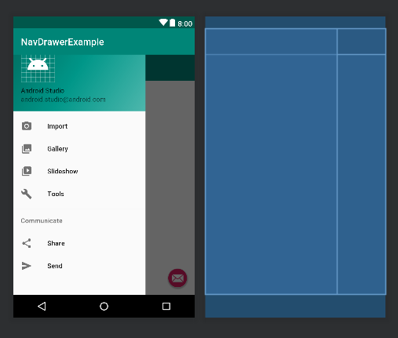
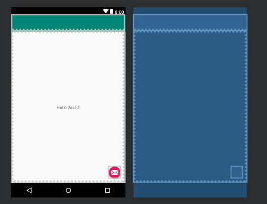
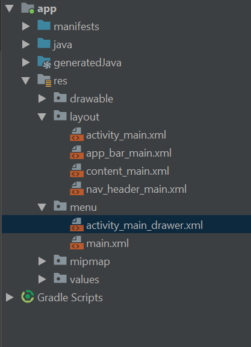

This tutorial will show you how to create an application with multiple activities through a navigation drawer. It also demonstrates the use of colors, input, and scroll view.
Prerequisites:
- Android Studio 3.2
- Android physical or virtual devices API 27
After you finished your project code, and make sure that your app behaves as expected. You should have a button that changes the image randomly.
Go to colors.xml (red -> values -> colors.xml)
You can change the colors for the project and add new color definitions here. These colors are in hex values and can be used anywhere.
Such as:
<?xml version="1.0" encoding="utf-8"?>
<resources>
<color name="colorPrimary">#A288E3</color>
<color name="colorPrimaryDark">#38023B</color>
<color name="colorAccent">#CCFFCB</color>
<color name="black">#000</color>
</resources>
Modify the colors for the application.
To change the background color of the application go to the layout file and type
android:background="#BBD5ED"
under the constraint layout. Change the hex value to what color you want it to be.
Now go see how colorful your drawing is.
To add a Navigation Drawer, go to File->New->New Project
Change the name as you want and Select Navigation Drawer Activity
There are several layouts in the layout folder. The first is activity_main.xml. This is how the page looks with the nav drawer out. We're not going to mess with this one.

The next is app_bar_main.xml. This is the functionality of the app bar at the top of the screen as well as the floating action button at the bottom of the page.

The next one is content_main.xml. This is where you put the content for the page. Such as in part 1, the image view, button, text all goes onto this layout.
The last one is nav_header_main.xml. This is the header of the navigation drawer.
To change the content of the Nav Drawer list, go to the menu folder.

Click on activity_main_drawer.xml. This is what the contents of the drawer is. In the example it is a list of items organized into two groups. Each item is a separate listing on the navigation drawer.
<item
android:id="@+id/nav_camera"
android:icon="@drawable/ic_menu_camera"
android:title="Import" />
The id is the id of the item. The icon is the image that is displayed next to the text and the title is what the item is displayed as.
There is another file called main.xml. This is for the action settings of the top right corner. This is an alternative menu for choosing items.
Run the example code and see how the navigation drawer, action settings and FAB button works. None of the items should be clickable yet.
The next step, is take what we learned earlier and color the page! The FAB button color is currently under colorAccent at colors.xml.
You'll notice that the navigation drawer headers don't change color.
To color the navigation drawer header go to drawable->side_nav_bar.xml. Click on text and you should see this
<shape xmlns:android="http://schemas.android.com/apk/res/android"
android:shape="rectangle">
<gradient
android:angle="135"
android:centerColor="#009688"
android:endColor="#00695C"
android:startColor="#4DB6AC"
android:type="linear" />
</shape>
You can mess around with the startColor, centerColor and endColor to create a cool color gradient. Or make all of them the same color and get a simple singular color at the header.
You've already change the color of the FAB Button. Now to change the image. Go to app_bar_main.xml. At Line 25 there should be the code for the FAB Button.
<android.support.design.widget.FloatingActionButton
android:id="@+id/fab"
android:layout_width="wrap_content"
android:layout_height="wrap_content"
android:layout_gravity="bottom|end"
android:layout_margin="@dimen/fab_margin"
app:srcCompat="@android:drawable/ic_dialog_email" />
To change the image go to the last line of the widget code. The srcCompact is the line to change the image.
To change the functionality go to MainActivity Java ->MainActivity. Lines 26-32 are the lines for the FAB button. You can change what it does with the listener. For now just change the text of
Snackbar.make(view, "Replace with your own action", Snackbar.LENGTH_LONG)
To some other text. This will pop up at the bottom of the page.
Run the app and see how it works
Now we're going to add a page, such that if I click on the Camera of the Nav Drawer it will open a new page. We're going to do this through adding a new activity.
Right click on app New->Activity->Navigation Drawer activity. This will create several layouts like in Add a Navigation Drawer. You can edit what you want in content_main (or what ever name the new activity calls it).
Then to have the activityMain go to the new activity, go to the MainActivity Java.
In:
public boolean onNavigationItemSelected(MenuItem item)
Add:
Intent intent = new Intent(this, [activityname].class);
startActivity(intent);
to the if statement you want, such as:
public boolean onNavigationItemSelected(MenuItem item) {
// Handle navigation view item clicks here.
int id = item.getItemId();
if (id == R.id.nav_camera) {
Intent intent = new Intent(this, cameraAct.class);
startActivity(intent);
} else if (id == R.id.nav_gallery) {
You also have to add this in reverse in the other activity Java file. Then if you go and run the application, you can then click on the button you added this code to and go to that activity.
Try this out and see if it works!
Now create another activity like you did above. In the layout content_[name].xml, switch to design mode.
In design you can add a widget called ScrollView. Make sure to add the constraints as necessary.
If you run the app this will show a simple page where you can try to scroll and see the animations.
Now we're going to add all the images from part 1 into the scrollview.
Create a new layout that is called item.xml with this code:
<?xml version="1.0" encoding="utf-8"?>
<LinearLayout xmlns:android="http://schemas.android.com/apk/res/android"
xmlns:app="http://schemas.android.com/apk/res-auto"
xmlns:tools="http://schemas.android.com/tools"
android:layout_width="wrap_content"
android:layout_height="wrap_content"
android:orientation="vertical"
tools:layout_editor_absoluteX="8dp"
tools:layout_editor_absoluteY="8dp">
<ImageView
android:id="@+id/imageViewScroll"
android:layout_width="150dp"
android:layout_height="150dp"
app:srcCompat="@drawable/ic_menu_manage" />
</LinearLayout>
Then we're going to go to the java file for the activity, in the function onCreate() add this code:
LinearLayout gallery = findViewById(R.id.galleryScroll);
LayoutInflater inflater = LayoutInflater.from(this);
for (int i = 1 ; i < 9; i ++){
View view = inflater.inflate(R.layout.item, gallery, false);
ImageView image = view.findViewById(R.id.imageViewScroll);
//image.setImageResource(R.drawable.ic_menu_manage);
InputStream image_stream =null;
try {
image_stream = getAssets().open("[folder name]/[picture name]"+i+".jpg");
} catch (Exception e ){}
image.setImageBitmap(BitmapFactory.decodeStream(image_stream));
gallery.addView(view);
}
This is assuming your pictures were with a common base name and a number at the end. This will add the pictures in order to the scrollView.
Now go to the app and see how it works. Based on how the image is proportioned in item.xml it can change sizes and have captions etc.
Go to a previous activity or make a new one. Then add a textView. There are multiple types of textViews, the one I use is a multiline text. You can change this under the inputType in the design layout. You can also add a hint that will disappear once someone starts typing. Also add a button that can be used to submit.
Then go to the java file for this activity and create a function for the onclick of the submit button.
public void submitComplaint(View v){
TextView text = findViewById(R.id.editText2);
text.getEditableText().clear();
}
Above is an example of such. This will get the view and just clear the text in the textView. Make sure to then add this function to the onClick of the button.
Now check! Any text in the text view should disappear with the button click!
In summary you added a navigation drawer, new activities. You add colors, functionality to a FAB button, a scroll view and inputText